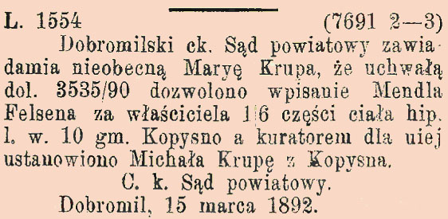

Po śmierci Hieronima Augustyna Lubomirskiego, w wyniku podziału spadku (23.06.1722 r.) klucz rybotycki (bez Trójcy, Łomnej i Krajnej) wraz z Kopysnem otrzymał jego syn Jan Kazimierz (1691-1736 r.). Według inwentarza z 1726 r. w Kopysnie było 8 kmieci, 17 zagrodników (w tym: leśny i karbownik, zwolnieni z pańszczyzny) i 8 komorników. Na folwarku hodowano bydło, trzodę chlewną, kury, kaczki, gęsi i indyki. Uprawiano zboża (pszenica, żyto, jęczmień i owies), groch, konopie i len (zob. "Akta klucza rybotyckiego" - zespół 56/209/0 - Archiwum Państwowe w Przemyślu)[14] .
3 maja 1790 r. Jakub z Kopysna Kopysteński ufundował dwie grupy ławek do kościoła św. Bartłomieja w Drohobyczu (sbc.org.pl). Na tę pamiątkę w kościele przy drzwiach zakrystii zawisła tabliczka z inskrypcją spisaną po łacinie (prawd. nadal znajduje się w świątyni).
Po śmierci Jana Lubomirskiego klucz rybotycki przejęła jego córka Maria Karolina z Lubomirskich Radziwiłłowa (ur. 1730 w Głogowie, zm. 10 stycznia 1795 w Tarnowie - wikipedia.org ).
W drodze umowy z dnia 25.11.1794 r. sprzedała swoje dobra Pawłowi i Janowi Tyszkowskim za kwotę 300 000 florenów polskich, w tym także przekazała im patronat obu obrządków religijnych.
Po śmierci Jana (1763-1811 r.) część należących do niego dóbr przeszła w ręce sióstr: Józefy z Tyszkowskich Wisłockiej i Zuzanny z Tyszkowskich Truskolaskiej oraz braci: Pawła i Wincentego Tyszkowskich.
W wyniku cesji dóbr Zuzanny z Tyszkowskich Truskolaskiej, dokonanej w 1815 r., jej część klucza rybotyckiego przeszła we władanie syna Antoniego Truskolaskiego, Ludwiki z Nowosieleckich Wisłockiej (po niej Leona Nowosieleckiego) oraz Pawła i Wincentego Tyszkowskich, z tym że Paweł zrezygnował ze swej części i podarował ją bratu Wincentemu.
Na mocy dekretu dziedzictwa wydanego przez Sąd Szlachecki w Tarnowie z dnia 17.11.1830 r. współwłaścicielami części klucza rybotyckiego po zmarłej Zofii Olszewskiej (córka Józefy z Tyszkowskich Wisłockiej oraz matka Euzebiusza) zostali Euzebiusz i Petronela Olszewscy.
Zgodnie z dekretem dziedzictwa wydanym przez Sąd Szlachecki w Tarnowie z dnia 18.01.1831 r., współwłaścicielem klucza rybotyckiego został Antoni Truskolaski.
Na mocy umowy z dnia 1.06.1831 r. zawartej pomiędzy Wincentym Tyszkowskim a Antonim Truskolaskim, dobra należące do Euzebiusza i Petroneli Olszowskich przeszły we władanie Antoniego. Następnie Antoni na mocy dekretu dziedzictwa z dnia 7.06.1835 r. przejął dobra po Wiktorii z Wisłockich Truskolaskiej.
W 1834 r. dzierżawcą dóbr Kopysna był Józef Chodylski z Wojtkowej, szwagier Józefa Nowosieleckiego (zob. wikipedia.org). 12.04.1934 r. w Kopysnie, w wieku 23 lat po porodzie (połóg) zmarła jego żona Honorata z Nowosieleckich. 9.11.1934 r. z powodu gorączki i kolki zmarła także służąca Chodylskich - Katarzyna Wójcicka z Koniuszy.
Około 1835 r. Książę Leon Sapieha (Leon_Ludwik_Sapieha) umieścił w Kopysnie swoją chorą na płuca żonę Jadwigę Klementynę z Zamojskich, która za radą lekarza ze Lwowa przechodziła tam kurację żętyczną. Prawdopodobnie zamieszkała w dworze Tyszkowskich (Leon książę Sapieha „Wspomnienia z lat od 1803-1863 r.bc.radom.pl, str.218).
Gazeta Lwowska (Nr 116 z dnia 3 października 1843 r.) zamieściła ogłoszenie o publicznej licytacji dóbr Kopysna będących we władaniu Wincentego Tyszkowskiego w celu zaspokojenia przysądzonej przez c.k. Sąd Szlachecki Lwowski należności pieniężnej niejakiej Julii Piszklewicz z domu Kucińska (członkini Towarzystwa Dam Dobroczynnych we Lwowie; dane z 1841 r. - books.google.pl, str. 2 poz. 87.) Zobowiązanie na rzecz pokrzywdzonej sąd ustalił na kwotę 3000 guldenów holenderskich wraz z odsetkami. Licytacja miała objąć 14/16 część Kopysna będącego własnością Wincentego Tyszkowskiego. Z obwieszczenia sądu o licytacji wynika, iż 1/16 część Kopysna będąca we władaniu nieżyjącego Eustachego Wisłockiego, przypadała w spadku jego synowi Wojciechowi. Z ww. ogłoszenia wynika, iż wierzycielem Tyszkowskiego byli Józef i Barbara Kriegseinsenowie z miejscowości Lacko niedaleko Dobromila (Józef był zatrudniony w kopalni soli w Salinie jako zawiadowca c.k. magazynu żupnego, a także jako mistrz). Nieznane są jednak zobowiązania Wincentego Tyszkowskiego w stosunku do tych osób.
Całość dóbr Kopysna wyceniono sądownie na 11 563 złotych reńskich i 51 krajcarów, natomiast część 14/16 Kopysna wyniosła 10 118 złotych reńskich i 16 krajcarów. Losy całej sprawy nie są znane.
W kolejnych latach (1844-45) część dóbr będących we władaniu różnych osób i wchodzących w skład klucza rybotyckiego, odkupił Wincenty Tyszkowski (1783-4.04.1846 r.), który stał się jego większościowym właścicielem. Po jego śmierci na mocy dekretu dziedzictwa wydanego przez Sąd Szlachecki w Tarnowie z dnia 14.04.1847 r. przypadły one w udziale jego synom Józefowi (1831-2.02.1882 r.) i Antoniemu (22.03.1825-8(9?).05.1895r.). Antoni Truskolaski (prawd. syn siostry Zuzanny z Tyszkowskich Truskolaskiej) zachował swoją część dóbr (1/16).
Podczas prac geodezyjnych w 1852 r. prowadzonych przez Wilhelma Kolba i Franza Safarika sporządzono dokładną, kolorową mapę katastralną (5 arkuszy formatu A1) i opis działek miejscowości z podziałem na właścicieli, kategorie użytkowania itp. (materiały dostępne w Archiwum Państwowym w Przemyślu - zob. skany.przemysl.ap.gov.pl) [4]. W tymże roku Kopysno posiadało 434,95 ha gruntów ornych, 52,4 ha łąk, 8,95 ha sadów, 47,72 ha pastwisk, 312,2 ha lasów, 0,06 ha stawów, 0,37 ha nieużytków, 9,35 ha dróg i 0,36 ha strumieni (razem 866,36 ha). Największym właścicielem gruntów (ok. 418 ha) w tym czasie był Józef Tyszkowski.
Wykaz wszystkich budynków w Kopysnie z 1852 r. wraz z ich współczesnym położeniem geograficznym zawiera załącznik w "Dokumentach do pobrania" - Wykaz i współczesne położenie budynków z 1852 r. [4a].
W Dzienniku Urzędowym do Gazety Lwowskiej (Nr 25 z 31stycznia 1854 r.books.google.pl - s.174) ukazało się ogłoszenie, w którym wezwano wszystkich podlegających służbie wojskowej nieobecnych w miejscu zamieszkania, by jak najszybciej zgłosili się celem jej odbycia. W przeciwnym wypadku zostaną uznani za zbiegów. Jednym z nich był Jacko Krupa urodzony w 1826 r. i zamieszkały w Kopysnie pod numerem 24.
Właściciele Kopysna: Antoni i Józef, synowie Wincentego Tyszkowskiego, Wiktoria z Giebułtowskich Tyszkowska, żona Wincentego (w 15/16 części) oraz Antoni Truskolaski (w 1/16 części) mieli problemy z wierzycielami, o czym można przeczytać w ogłoszeniu Sądu Rejonowego w Przemyślu z dnia 24.10.1856r. zamieszczonym w Dzienniku Urzędowym do Gazety Lwowskiej Nr 257 z 7.11.1856 r. (zob. books.google.pl).
W latach od 1861 roku i prawdopodobnie do swej śmierci Józef Tyszkowski był jednym z członków wspierających Towarzystwo „Bratniej Pomocy” we Lwowie, skupiającej słuchaczy Politechniki Lwowskiej (zob. delibra.bg.polsl - skan 172).
Na podstawie umowy działu z dnia 20.12.1865 r. pomiędzy Józefem i Antonim Tyszkowskim a żoną Wincentego Wiktorią z Giebułtowskich Tyszkowską, dobra Kopysna przypadły Józefowi Tyszkowskiemu.
Gmina Kopysno przez posła Smolkę (Franciszek_Jan_Smolka) złożyła do Galicyjskiego Sejmu Krajowego z/s we Lwowie, petycję o zapomogę (Sprawozdanie galicyjskiego Sejmu krajowego z 1865/6 r. – 30 posiedzenie 3 sesji Sejmu galicyjskiego, str. 564, pkt 1111 - books.google.pl). Sejm na posiedzeniu w dniu 9 lutego 1866 r. petycję tę skierował do Wydziału krajowego, zarządzającego majątkiem krajowym.

Franciszek Smolka (jbc.bj.uj.edu.pl - skan 30)
Józef Tyszkowski był także zapalonym myśliwym, a część swoich trofeów podarował Muzeum im. Dzieduszyckich we Lwowie. Prowadzący tę instytucję jej założyciel Włodzimierz Dzieduszycki, tak o nim napisał w swej książce "Muzeum im. Dzieduszyckich we Lwowie":
"W tym dziale (Ssaki) wiele zawdzięczam p. hr Józefowi Tyszkowskiemu, być może jednemu z ostatnich polskich myśliwych, którego bardziej interesuje jakość zwierzyny niż ilość. Zawdzięczam mu również ciekawe okazy niedźwiedzi i jeleni z Karpat." (zob. archive.org).
W książce autor wspomina także o otrzymaniu w darze od hrabiego dwóch skowronków górniczków (Alauda alpestris) zabitych 28 stycznia 1877 r. w Rybotyczach.

Pieczęć Józefa Tyszkowskiego - Dominium Rybotycze (rcin.org.pl)
Po I rozbiorze Polski rząd Austrii przeprowadził weryfikację szlachectwa w celu wyłączenia drobnej szlachty i szlachty (tzw. gołoty) legitymującej się szlacheckim rodowodem, lecz nie posiadającej ziemi. Lista osób o nazwisku Kopystyński, rodu związanego z Kopysnem, którym władze zaborcze zatwierdziły dawne polskie lub nadały nowe tytuły szlacheckie przedstawia poniższa tabelka.

Źródło - " Poczet szlachty galicyjskiej i bukowińskiej, Lwów 1857". - books.google.pl.
20 maja 1873 r. Kopysno i okoliczne wsie nawiedziło oberwanie chmury i grad (jbc.bj.uj.edu.pl).
14 czerwca 1873 r. Kopysno nawiedził grad czyniąc szkody w rolnictwie ("Materyały do Klimatografii Galicyi. 1873").
Józef Tyszkowski zmarł 2.02.1882 roku i jak niektórzy sądzą, przyczyną śmierci była nieuleczalna choroba nerek. Jego dobra prawdopodobnie przejął brat Antoni. Choć oficjalnie był kawalerem, miał kilkoro nieślubnych dzieci, dwie córki (Wiktoria wyszła za mąż za Bazylego Metyka, a Maria za Albina Fedorowicza) i syna Pawła ze związku ze swoją gospodynią Katarzyną Szylak z domu Podoła z miejscowości Jamna, którego adoptował w 1865 r.

Antoni Tyszkowski (jbc.bj.uj.edu.pl - skan 26)
Według "Słownika geograficznego Królestwa Polskiego i innych krajów słowiańskich" (Druk "WIEKU" Nowy Świat Nr 59, Tom IV, Warszawa 1883 r.) znaczna część gruntów Kopysna stanowiła własność Józefa Tyszkowskiego. Posiadał on 296 morgów (1 morga austriacka = 0,5755 ha) gruntów ornych, 44 morgi łąk i ogrodów, 24 morgi pastwisk i 362 morgi lasów. Pozostałe grunty miejscowości to 462 morgi gruntów ornych, 61 morgów łąk i ogrodów, 59 morgów pastwisk i 180 morgów lasu, co odpowiada powyższym danym z 1852 r.
24 października 1886 r. Antoni Tyszkowski zwrócił się do władz austriackich o przeniesienie praw szlacheckich, w tym posługiwanie się nazwiskiem Tyszkowski, na adoptowanego syna Pawła, na co uzyskał zgodę (archivinformationssystem.at).
13 czerwca 1888 r. do sanatorium "Goldene Glocke" przy ul. Kirchengasse w Karlowych Warach przybyła Panna Tekla Kotlarczyk z Kopysna, gospodyni, jak czytamy w "Karlsbade Kurliste" (kramerius5.nkp.cz). Prawdopodobnie pracowała we dworze Antoniego Tyszkowskiego.
W Gazecie Lwowskiej (Nr 293 z 24 grudnia 1892 r.) znalazło się następujące ogłoszenie:
Antoni Tyszkowski zmarł w dniu 8(9?).05.1895r. w Trójcy. 11.05.1895 r. na posiedzeniu Parlamentu w Wiedniu, jego Przewodniczący Chlumecky Johann Ritter von, Freiherr (parlament.gv.at) poświęcił mu gorące wspomnienie, jako deputowanemu (anno.onb.ac.at). Rada Gminna w Dobromilu nadała mu pośmiertne honorowe obywatelstwo (anno.onb.ac.at).
Antoni Tyszkowski rok przed swą śmiercią przekazał cały swój majątek, w tym dobra Kopysna swojemu adoptowanemu synowi Pawłowi (Szylak) (ur. 1856 r.) (zob. "Jana Porembalskiego wspomnienia z birczańskiego" - pbc.rzeszow.pl i www.apokryfruski.org).
Jak doniósł Kurier Lwowski z 22.10.1895 r. (anno.onb.ac.at), niejaki Ostapa, włościanin z pow. dobromilskiego i sąsiad hr. Pawła Tyszkowskiego miał oskarżać go o niewłaściwe traktowanie włościan, przedstawiając na to dowód w postaci paczki pożółkłych karteczek z umieszczoną na nich pieczątką hrabiego, napisem „35 ct 1892" oraz nazwą różnych miejscowości, w tym Kopysna. Twierdził on, iż w 1892 r. trudno było o pracowników, więc Paweł Tyszkowski przyrzekł ludziom niezwykle wysoką płacę za dzień pracy w żniwa - 35 centów, której potwierdzeniem jej wykonania, a zarazem podstawą do wypłaty wynagrodzenia były owe "kwitki". Ludzie żądni zarobku, jak mówił dalej, szli parę dni, jak po święconą wodę, chodzili po parę mil na różne folwarki i otrzymywali kwitki, lecz hrabia nie uznał ich później i nie wypłacił nikomu ani centa. Dwa lata ludzie ci domagali się zapłaty od hrabiego, lecz jej nie uzyskali i w końcu mu odpuścili. Sam Ostapa, jak twierdził miał takich karteczek kilka tysięcy, co miało poważnie nadszarpnąć reputację deputowanego do Rady Państwa.
Kurier Lwowski z 9.11.1895 r. (anno.onb.ac.at) w satyrycznym tonie doniósł, iż po wyborach czwartkowych do Rady Państwa, w których do parlamentu dostał się Paweł Tyszkowski podczas uczty, na którą zaprosił swoich wyborców nowy poseł, ze stołów ulotniło się sześć srebrnych łyżek.
W Kurierze Lwowskim z dnia 9.04.1903 r. zamieszczono ogłoszenie o tym, że z urzędu podjęto postępowanie przeciwko Michałowi Krupie z Kopysna za sprzeniewierzenie pieniędzy gminnych (anno.onb.ac.at).
Według "Skorowidza dóbr tabularnych w Galicyi z Wielkiem Księstwem Krakowskim" - zob. umcs.lublin.pl) Paweł Tyszkowski (Szylak) w 1905 roku był właścicielem 164, 25 ha gruntów rolnych, 24,45 ha łąk, 0,42 ha ogrodów, 12,34 ha pastwisk, 299,51 ha lasów, 0,57 ha nieużytków i 0,64 ha parceli budowlanej (razem ok. 502,18 ha).
W latach 1906-1912 część mieszkańców Kopysna wyemigrowała do USA. Wykaz tych osób i bliższe dane dotyczące ich emigracji zamieszczono poniżej w "Dokumentach do pobrania" - Wykaz emigrantów do USA [11].
Mieszkańcy Kopysna, chcąc uregulować swoje czynności i nadać im formę prawną korzystali z usług c.k. notariuszy w Dobromilu. Akty notarialne z lat 1891-1913 znajdują się na stronie Archiwum Państwowego w Przemyślu [10].
Według opracowania "Skorowidz leśny na rok 1907" autorstwa Ignacego Szczerbowskiego (www.wbc.poznan.pl) w tym czasie Albert Kettner, pochodzący z miejscowości Sebnitz (Niemcy - wikipedia.org), mieszkaniec Kopysna, sprawował funkcję podleśniczego w lasach będących własnością Pawła Tyszkowskiego (www.wbc.poznan.pl; skan nr 303 i 304 - błędnie podano nazwisko Kettner, jako Kattner).
Gazeta Lwowska (Nr 195 z 27 sierpnia 1909 r. - jbc.bj.uj.edu.pl) doniosła o licytacji nieruchomości:
L. cz. E. 1327/9 (7) (8406)
Cena wywołania wynosi 540 kor., zaś najniższa oferta, poniżej której sprzedaż nie nastąpi, wynosi 360 kor.
Cena kupna ma być złożoną w sądzie do dni 30 od prawomocności uchwały zatwierdzającej akt licytacyjny.
O. k. Sąd powiatowy, Oddział IV.
Dobromil, dnia 11 sierpnia 1909."